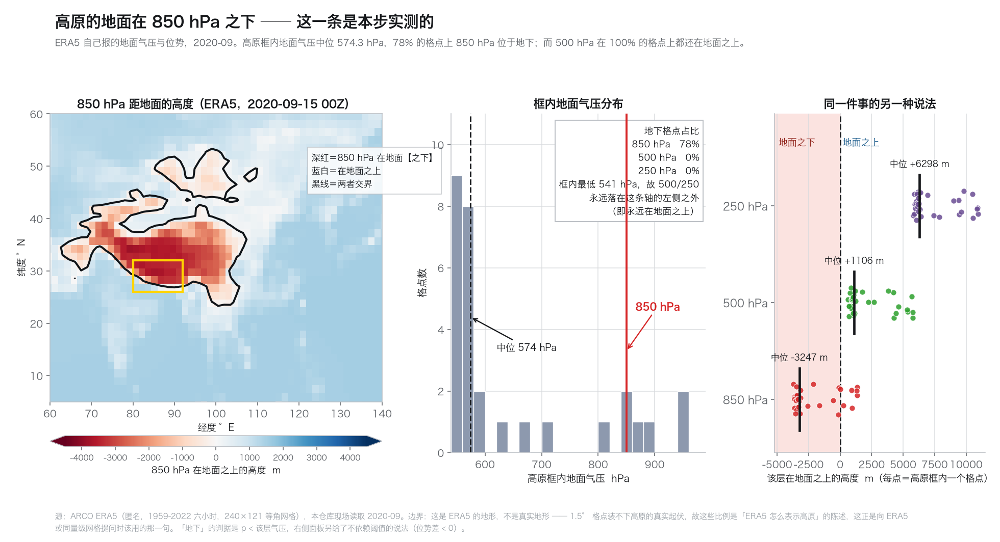
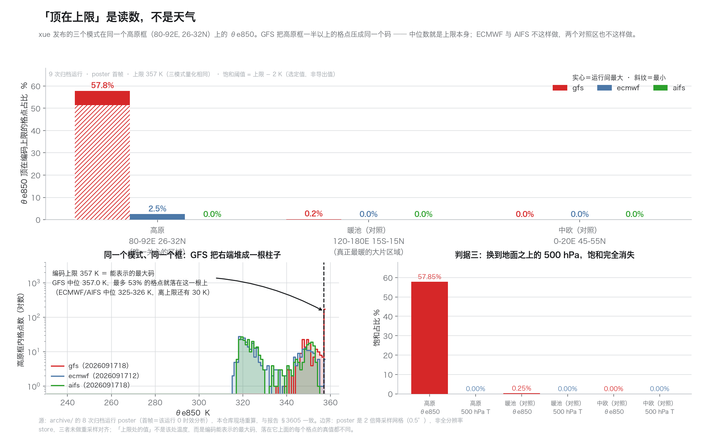
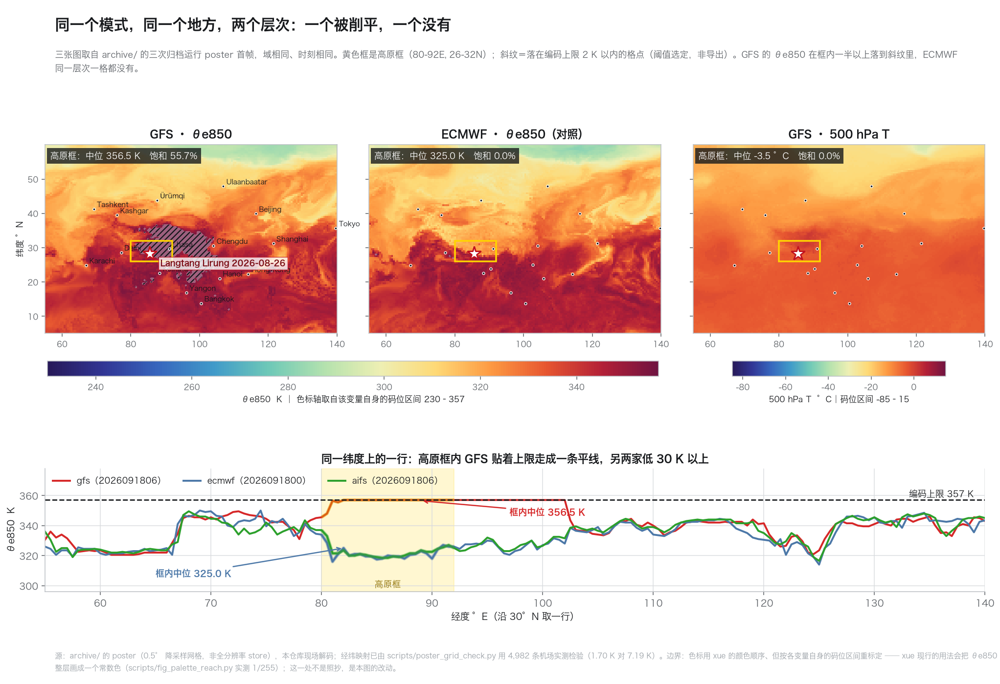
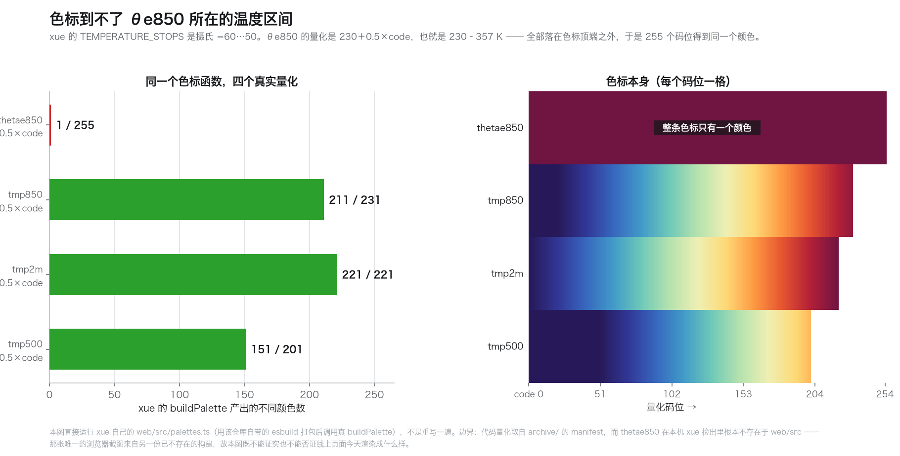
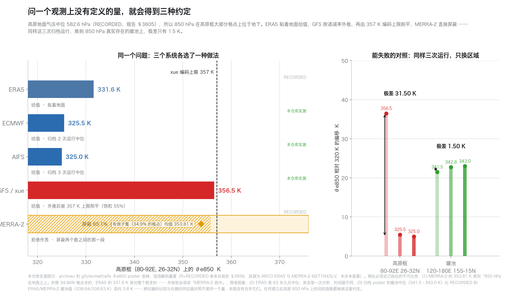
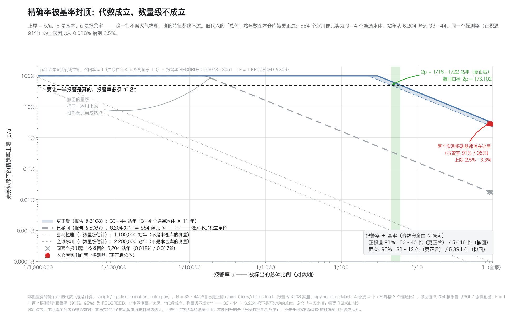
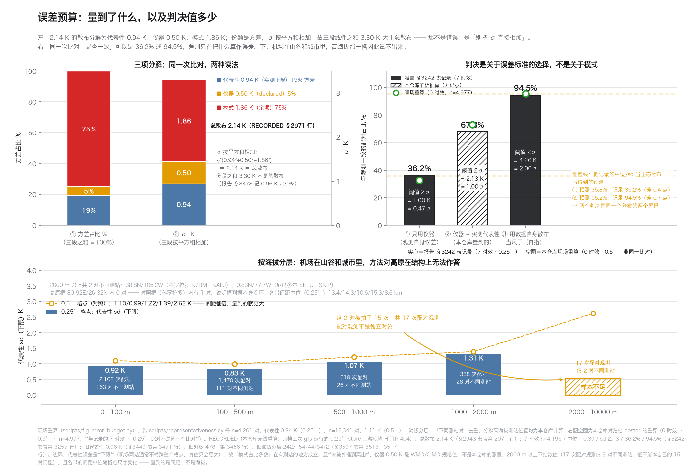

目前能做的可视化
生成于 2026-09-23T13:36:15+00:00 · 这是快照，不是实时页 ·
7/7 张在盘上 ·
每一张都可以用卡片里给出的命令重跑
本页遵守本仓库的纪律，逐条写在卡片里：
RECORDED 与 OBSERVED HERE 分开 —— 从论文或报告读来的数不是本仓库的测量，
每张图都标了哪些是现场重算的；
区分「未建立」与「无技巧」 —— 样本不足不是结论；
数字只从图自己写的 JSON 里抄，不从散文里重打一遍；
每张图都在自己的页脚写明边界 —— 一张没有边界的图会被引用成它没有主张的东西。
01
高原的地面在 850 hPa 之下
实测

- 它主张什么
- ERA5 自己报的地面气压显示：高原框内大部分格点上 850 hPa 位于地下；500 hPa 则几乎所有格点都在地面之上。右侧面板给了不依赖阈值的说法（位势差）。
- 它不主张什么
- 这是 ERA5 的地形，不是真实地形；1.5° 格点装不下高原的真实起伏。所以这些比例是关于「ERA5 怎么表示高原」的陈述 —— 而这正是向 ERA5 或同量级网格提问时该用的那一句。
- 为什么要画
- 整份研究都建立在这一条几何事实之上，而它此前只是一个记录来的数（582.6 hPa）。
- 数字（本仓库现场重算）
- 高原框地面气压中位 574.3 hPa
850 hPa 在地下 78.1%
500 hPa 在地下 0.0%
850 hPa 距地面中位 -3247 m
对照暖池 850 在地下 0.12%
- 重跑
scripts/fig_level_problem.py
02
「顶在上限」是读数，不是天气
实测

- 它主张什么
- 9 次归档运行、三个模式：GFS 的高原框有 51–58% 的格点顶在编码上限 357 K，ECMWF 0–2.5%、AIFS 全为 0；两个对照区（含真正最暖的暖池）都不到 1%；换到 500 hPa，饱和完全消失。
- 它不主张什么
- 只用 poster（0.5° 降采样网格），未做重采样对齐；「饱和」的阈值 = 上限 − 2 K 是选定的，不是从数据推出来的。
- 为什么要画
- 三条判据各自都能失败：跨运行不稳定 → 是天气；对照区也顶到 → 是真实高温；500 hPa 也顶到 → 层次解释不成立。三条都过了。
- 数字（本仓库现场重算）
- gfs 高原饱和 51.38–57.85%
ecmwf 高原饱和 0.00–2.46%
aifs 高原饱和 0.00–0.00%
暖池最大 0.25%
- 重跑
scripts/fig_plane_ceiling.py
03
同一个模式、同一个地方、两个层次：一个被削平，一个没有
实测

- 它主张什么
- 把场画出来：GFS 的 θe850 在高原框内一半以上落进「离上限 2 K 以内」的斜纹区，框内中位 356.5 K；ECMWF 同一层次、同一框、同一量化，一格都没有，中位 325.0 K，差 31.5 K。500 hPa 上一个都没有。
- 它不主张什么
- poster 是 0.5° 降采样网格，不是全分辨率 store。色标用的是 xue 的颜色顺序、但按各变量自身的码位区间重标定 —— 这一处不是照抄，是本图的改动，理由见下一张图。地图上没有任何外部底图：Natural Earth 两次下载都被截断，改用标注坐标。
- 为什么要画
- p / a 的算术能说明报告里那些数，但说明不了「读这个产品的人看到的是什么」。
- 数字（本仓库现场重算）
- gfs/thetae850 中位 356.5，饱和 55.69%
ecmwf/thetae850 中位 325.0，饱和 0.00%
gfs/tmp500 中位 -3.5，饱和 0.00%
- 重跑
scripts/fig_high_asia_fields.py
04
色标到不了 θe850 所在的温度区间
实测（在 xue 自己的代码上）

- 它主张什么
- xue 的 TEMPERATURE_STOPS 是摄氏 −60…50；θe850 的量化是 230＋0.5×code，即 230–357 K。把归档里真实的量化喂进 xue 自己的 buildPalette，255 个码位只得到 1 种颜色。同样这个函数对 tmp850/tmp2m/tmp500 分别给出 211/221/151 种颜色。
- 它不主张什么
- 这一条说的是本机 xue 检出里的调色板代码，不是线上页面。thetae850 在本机 web/src 里根本不存在 —— 那张唯一的浏览器截图来自另一份已不存在的构建，所以本图既不能证实也不能否证线上今天渲染成什么样。
- 为什么要画
- 报告 §576 曾用那张截图当作「高原在图上更亮」的证据。若色标本就不能分辨，那条证据的形状需要重新检查 —— 这一步只把边界说清楚，不替它下结论。
- 数字（本仓库现场重算）
- θe850 1 色 / 255 码位
对照 tmp850 211 色，tmp2m 221 色，tmp500 151 色
- 重跑
scripts/fig_palette_reach.py
05
问一个观测上没有定义的量，就会得到三种约定
实测 + 记录

- 它主张什么
- 同一三次归档运行，只换区域：高原框三模式中位极差 31.50 K，暖池极差 1.50 K。ERA5 贴地给值、GFS 外推后被上限削平、MERRA-2 屏蔽 65.1%。
- 它不主张什么
- 两处不可比性必须自己踩住：(1) MERRA-2 的有效子集均值是对「850 hPa 在地面之上」的那 34.86% 格点求的，ERA5 是对整框求的，并排放会读成「MERRA-2 居中」；(2) ERA5 是 63 年九月中位，其余是一次分析。另外，归档 poster 的暖池中位比记录来的 ERA5/MERRA-2 暖池值高约 3.8 K，本图把它们分开谈，没有并进对照。
- 为什么要画
- 这是 CONTINUE.md 第四节说「最可能真正救人」的那一条：任何建立在高原 850 hPa 上的风险指数都继承这套约定。
- 数字（本仓库现场重算）
- 高原框三模式中位极差 31.50 K
暖池三模式中位极差 1.50 K
GFS 高原中位 356.5 K，饱和 55.0%
- 重跑
scripts/fig_conventions.py
06
精确率的上限由基率封顶
代数 + 实测

- 它主张什么
- 完美排序下 precision = p / a，与大气物理无关。两个实测探测器的报警率在更正口径下是基率的 30–42 倍，在撤回口径下是 5,646 倍。
- 它不主张什么
- 代数成立，数量级不成立：要定出「站年」必须先有冰川边界（RGI/GLIMS），本仓库至今未取到。已被撤回的 6,204 与修正后的 33–44 都画在图上。另记一处会踩的坑：scripts/discrimination_ceiling.py 的 POPULATIONS 里仍写着已撤回的 564×11，更正只存在于 claims.toml 与报告 §3108 —— 本步没有改那个脚本，但在图面和 stdout 都标了出来。
- 为什么要画
- 「再找一个更好的特征」不会修好它 —— 这一条把问题从「找特征」转成「缩小总体」。
- 数字（本仓库现场重算）
- 更正的总体：33–44 站年（p = 2.27e-02–3.03e-02）
已撤回的总体：6,204 站年（p = 1.61e-04）
正积温 PDD：报警率 91%，是基率的 30–40 倍（更正口径）／5,646 倍（撤回口径）
雨-冰阈值 50：报警率 95%，是基率的 31–42 倍（更正口径）／5,894 倍（撤回口径）
- 重跑
scripts/fig_discrimination_ceiling.py
07
判决取决于误差标准，不取决于数据
实测

- 它主张什么
- 同一次比对、同一个观测，一致性可以是 36.2% 或 94.5%。重算把这一条推得更远：把记录的 7 时效（中位 −0.30 K、sd 2.13 K）当作一条正态，两个判决被预测到 35.8% 与 95.2% —— 差 0.4 与 0.7 个百分点。所以这个摆动不携带关于模式的信息，两个数完全由阈值决定。用本步实测的代表性误差（0.94 K）作第二档标准，同一次比对读作 67.8%。
- 它不主张什么
- 代表性误差是下限不是真值（机场集中在城市，同格点两站不横跨整个格点）。按海拔分层时，2000 m 以上只有 2 组独立测站对（17 条配对观测），这个方法对高原与喜马拉雅在结构上无法作答。archive/ 已比 §3449 写它时大了约十九倍（观测 16,347 → 304,922 条，测站对 478 → 4,261），所以报告里那个「478 对」是会过期的数，引用它必须带上数据量。36.2%/94.5% 这次复算不了：三个归档 gfs 的 0.25° store 上游已 404，故标为 RECORDED。
- 为什么要画
- 与 ITS_LIVE 对岩体失明、PDD 91% 饱和同属一类：限制不在数据量，而在观测所在的位置。
- 数字（本仓库现场重算）
- 0.25° 现场重算：观测 304,922 条，同格同刻测站对 n=4,261，代表性 0.94 K
记录的两个判决：36.2% / 94.5%（同一分布读在两处阈值）
正态预测：35.8% / 67.8% / 95.2%
- 重跑
scripts/fig_error_budget.py